13 Symulacje
Odtworzenie obliczeń z tego rozdziału wymaga załączenia poniższych pakietów oraz wczytania poniższych danych:
library(sf)
library(stars)
library(gstat)
library(tmap)
library(ggplot2)
library(geostatbook)
data(punkty)
data(siatka)13.1 Symulacje geostatystyczne
Kriging daje optymalne estymacje, czyli wyznacza najbardziej potencjalnie możliwą wartość dla wybranej lokalizacji. Dodatkowo, efektem krigingu jest wygładzony obraz. W konsekwencji wyniki estymacji różnią się od danych pomiarowych. Uzyskiwana jest tylko (aż?) estymacja, a prawdziwa wartość jest niepewna… Korzystając z symulacji geostatystycznych nie tworzymy estymacji, ale generujemy równie prawdopodobne możliwości poprzez symulację z rozkładu prawdopodobieństwa (wykorzystując generator liczb losowych).
13.1.1 Właściwości
Właściwości symulacji geostatystycznych:
- Efekt symulacji ma bardziej realistyczny przestrzenny wzór (ang. pattern) niż kriging, którego efektem jest wygładzona reprezentacja rzeczywistości.
- Każda z symulowanych map jest równie prawdopodobna.
- Symulacje pozwalają na przedstawianie niepewności interpolacji.
- Jednocześnie - kriging jest znacznie lepszy, gdy naszym celem jest jak najdokładniejsza estymacja.
13.1.2 Typy symulacji
Istnieją dwa podstawowe typy symulacji geostatystycznych:
- Symulacje bezwarunkowe (ang. Unconditional Simulations) - wykorzystujące semiwariogram, żeby włączyć informację przestrzenną, ale wartości ze zmierzonych punktów nie są w niej wykorzystywane.
- Symulacje warunkowe (ang. Conditional Simulations) - opiera się ona o średnią wartość, strukturę kowariancji oraz obserwowane wartości (w tym sekwencyjna symulacja danych kodowanych (ang. Sequential indicator simulation)).
13.2 Symulacje bezwarunkowe
Symulacje bezwarunkowe w pakiecie gstat tworzy się z wykorzystaniem funkcji krige().
Podobnie jak w przypadku estymacji geostatystycznych, należy tutaj podać wzór, model, siatkę, średnią globalną (beta), oraz liczbę sąsiednich punktów używanych do symulacji (w przykładzie poniżej nmax = 30).
Należy wprowadzić również informacje, że nie korzystamy z danych punktowych (locations = NULL) oraz że chcemy stworzyć dane sztuczne (dummy = TRUE).
Ostatni argument (nsim = 4) informuje o liczbie symulacji do przeprowadzenia (Ryciny 13.1, 13.2).
sym_bezw1 = krige(formula = z ~ 1,
model = vgm(psill = 0.025,
model = "Exp",
range = 100),
newdata = siatka,
beta = 1,
nmax = 30,
locations = NULL,
dummy = TRUE,
nsim = 4)## [using unconditional Gaussian simulation]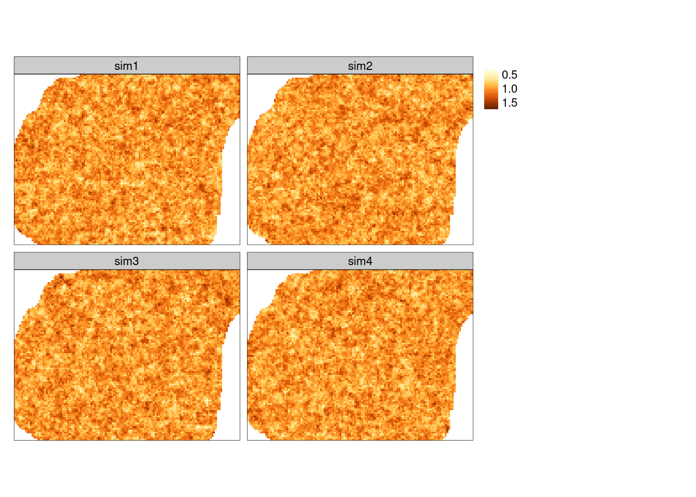
Rycina 13.1: Przestrzennie skorelowana powierzchnia o średniej równej 1, wartości nsill równej 0.025, zasięgu równym 100, oraz modelu wykładniczego
sym_bezw2 = krige(formula = z ~ 1,
model = vgm(psill = 0.025,
model = "Exp",
range = 1500),
newdata = siatka,
beta = 1,
nmax = 30,
locations = NULL,
dummy = TRUE,
nsim = 4)## [using unconditional Gaussian simulation]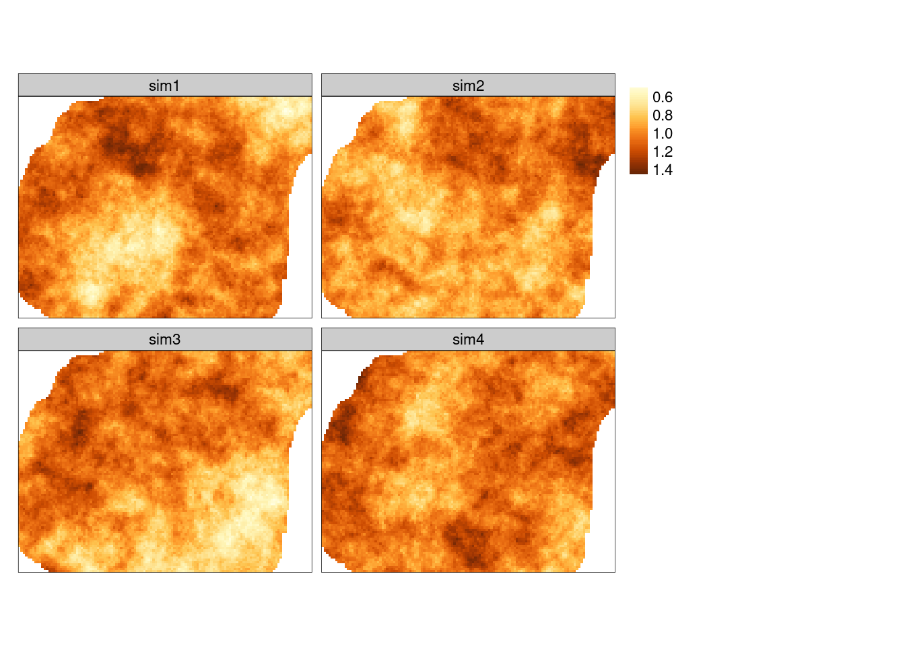
Rycina 13.2: Przestrzennie skorelowana powierzchnia o średniej równej 1, wartości nsill równej 0.025, zasięgu równym 1500, oraz modelu wykładniczego
13.3 Symulacje warunkowe
13.3.1 Sekwencyjna symulacja gaussowska
Jednym z podstawowych typów symulacji warunkowych jest sekwencyjna symulacja gaussowska (ang. Sequential Gaussian simulation). Polega ona na wybieraniu losowo lokalizacji nie posiadającej zmierzonej wartości badanej zmiennej:
- Krigingu wartości w tej lokalizacji korzystając z dostępnych danych.
- Wylosowaniu wartości z rozkładu normalnego o średniej i wariancji wynikającej z krigingu.
- Dodaniu symulowanej wartości do zbioru danych i przejściu do kolejnej lokalizacji.
- Powtórzeniu poprzednich kroków, aż do momentu gdy nie pozostanie już żadna nieokreślona lokalizacja.
Sekwencyjna symulacja gaussowska wymaga zmiennej posiadającej wartości o rozkładzie zbliżonym do normalnego.
Można to sprawdzić poprzez wizualizacje danych (histogram, wykres kwantyl-kwantyl) lub też test statystyczny (test Shapiro-Wilka) (ryciny 13.3 i 13.4).
Zmienna temp nie ma rozkładu zbliżonego do normalnego.
ggplot(punkty, aes(temp)) + geom_histogram()
Rycina 13.3: Rozkład wartości zmiennej temp.
ggplot(punkty, aes(sample = temp)) + stat_qq()
shapiro.test(punkty$temp)##
## Shapiro-Wilk normality test
##
## data: punkty$temp
## W = 0.96904, p-value = 0.00004054
Rycina 13.4: Wykres kwantyl-kwantyl wartości zmiennej temp.
Na potrzeby symulacji zmienna temp została zlogarytmizowna (ryciny 13.5 i 13.6).
punkty$temp_log = log(punkty$temp)
ggplot(punkty, aes(temp_log)) + geom_histogram()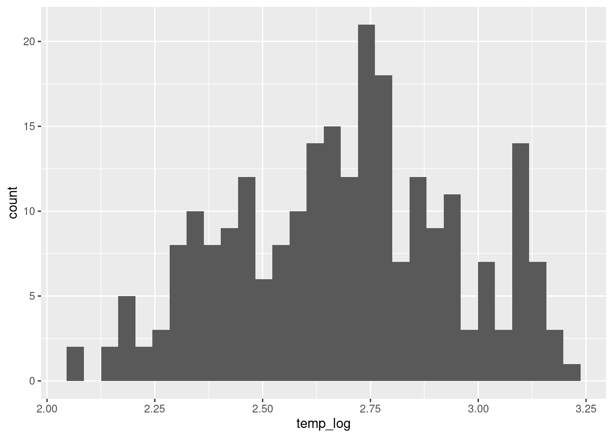
Rycina 13.5: Rozkład wartości zmiennej temp po logaritmizacji.
ggplot(punkty, aes(sample = temp_log)) + stat_qq()
shapiro.test(punkty$temp_log)##
## Shapiro-Wilk normality test
##
## data: punkty$temp_log
## W = 0.98435, p-value = 0.009226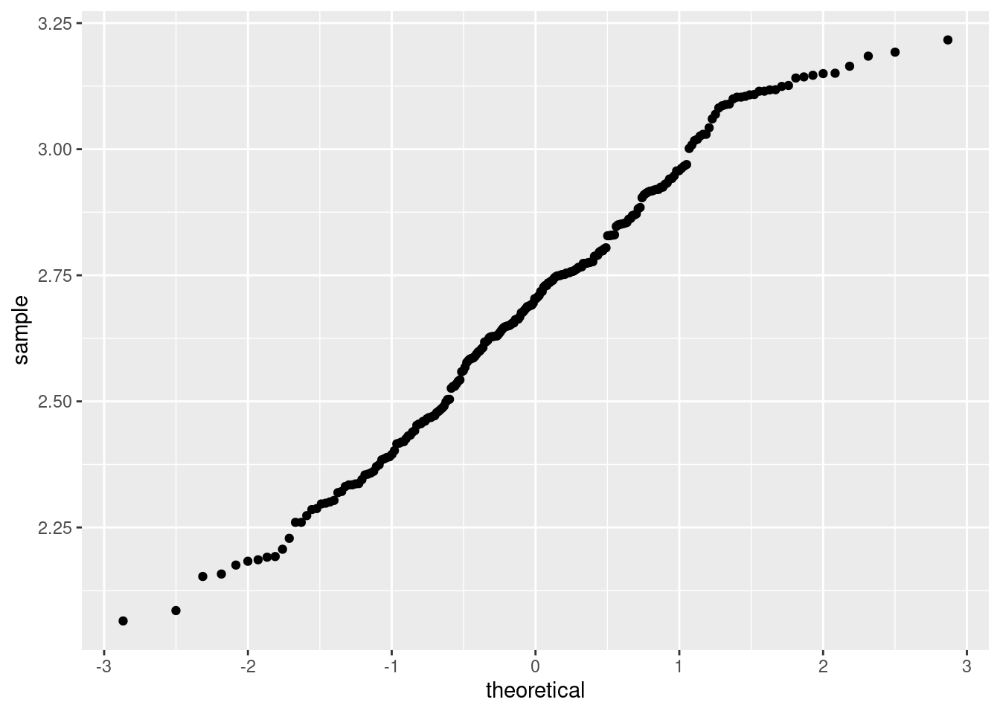
Rycina 13.6: Wykres kwantyl-kwantyl wartości zmiennej temp po logaritmizacji.
Dalsze etapy przypominają przeprowadzenie estymacji statystycznej, jedynym wyjątkiem jest dodanie argumentu mówiącego o liczbie symulacji do przeprowadzenia (nsim w funkcji krige()) (ryciny 13.7 i 13.8).
vario = variogram(temp_log ~ 1, locations = punkty)
model = vgm(model = "Sph", nugget = 0.005)
fitted = fit.variogram(vario, model)
plot(vario, model = fitted)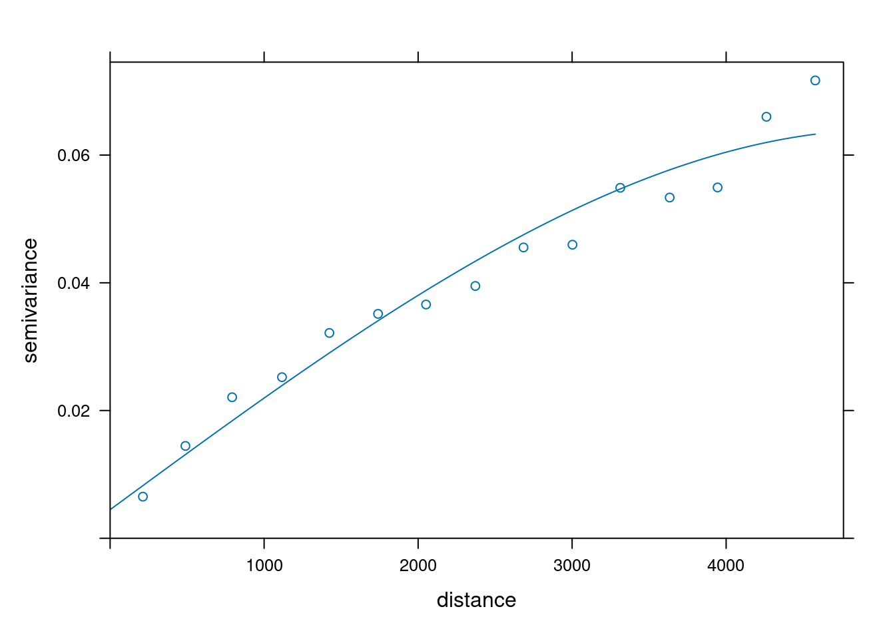
Rycina 13.7: Model semiwariogramu zmiennej temp po logaritmizacji
sym_ok = krige(temp_log ~ 1,
locations = punkty,
newdata = siatka,
model = fitted,
nmax = 30,
nsim = 4)## drawing 4 GLS realisations of beta...
## [using conditional Gaussian simulation]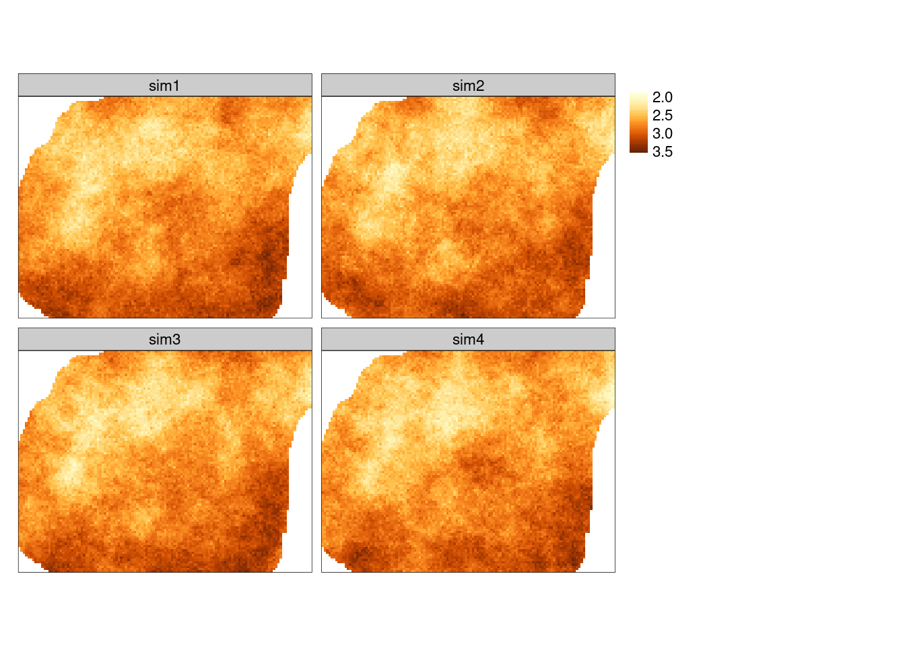
Rycina 13.8: Symulacja warunkowa zmiennej temp po logaritmizacji.
Wyniki symulacji można przetworzyć do pierwotnej jednostki z użyciem funkcji rev_trans(), którą stworzyliśmy w sekcji 3.6.4.
Potrzebuje ona jednak najpierw określenia wariancji symulacji (rycina 13.9).
Do jej wyliczenia używamy kombinacji funkcji st_apply() oraz var().
W funkcji st_apply() konieczne tutaj jest określenie argumentu MARGIN = c("x", "y"), co oznacza że funkcja var będzie wykonana dla każdej komórki niezależnie.
W efekcie tej operacji otrzymujemy tylko jedną warstwę.
sym_ok_var = st_apply(sym_ok, MARGIN = c("x", "y"), FUN = var)
tm_shape(sym_ok_var) +
tm_raster(style = "cont", palette = "Purples")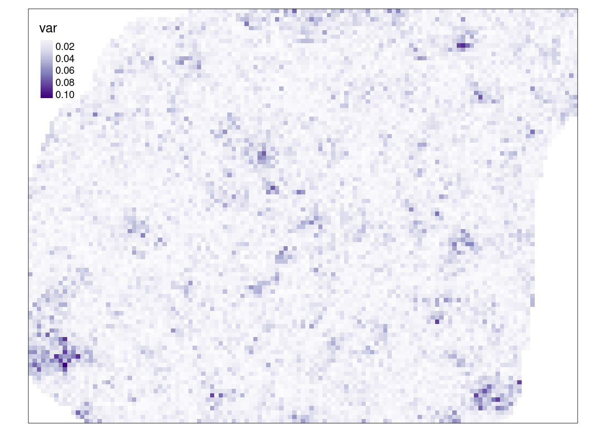
Rycina 13.9: Wariancja symulacji warunkowej.
Teraz możliwe jest przywrócenie oryginalnej jednostki dla wszystkich symulacji z użyciem funkcji st_apply() i rev_trans().
(rycina 13.10)
sym_ok_rescaled = st_apply(sym_ok, 3, rev_trans,
var = sym_ok_var$var, obs = punkty$temp)
tm_shape(sym_ok_rescaled) +
tm_raster(title = "", style = "cont")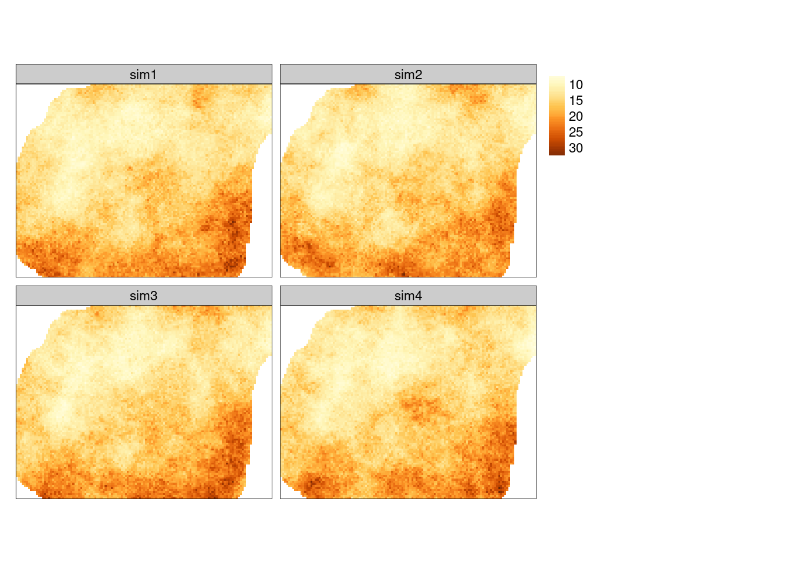
Rycina 13.10: Symulacja warunkowa po przeskalowaniu do oryginalnych wartości.
Symulacje geostatystyczne pozwalają również na przedstawianie niepewności interpolacji.
W tym wypadku należy wykonać znacznie więcej powtórzeń (np. nsim = 100).
sym_sk = krige(temp_log ~ 1,
location = punkty,
newdata = siatka,
model = fitted,
nsim = 100,
nmax = 30)## drawing 100 GLS realisations of beta...
## [using conditional Gaussian simulation]Uzyskane wyniki należy przeliczyć do oryginalnej jednostki, a następnie wyliczyć odchylenie standardowe ich wartości.
Można to zrobić korzystając trzykrotnie z funkcji st_apply().
Przywrócenie oryginalnej jednostki odbywa się poprzez wyliczenie wariancji symulacji, a następnie użycie funkcji rev_trans().
# wyliczenie wariancji (jedostka log)
sym_sk_var = st_apply(sym_sk, MARGIN = c("x", "y"), FUN = var)
# przywrócenie oryginalnej jednostki
sym_sk_rescaled = st_apply(sym_sk, 3, rev_trans,
var = sym_sk_var$var, obs = punkty$temp)
sym_sk_rescaled## stars object with 3 dimensions and 1 attribute
## attribute(s), summary of first 100000 cells:
## Min. 1st Qu. Median Mean 3rd Qu. Max. NA's
## var1 6.434447 12.14176 14.56187 15.17236 17.65367 33.26342 10550
## dimension(s):
## from to offset delta refsys values x/y
## x 1 127 745542 90 ETRS89 / Poland CS92 NULL [x]
## y 1 96 721256 -90 ETRS89 / Poland CS92 NULL [y]
## sample 1 100 NA NA NA sim1,...,sim100Wyliczenie odchylenia standardowego odbywa się poprzez argumenty MARGIN = c("x", "y") oraz FUN = sd.
W ten sposób funkcja sd() będzie wykonana niezależnie dla każdej komórki dla wszystkich warstw.
W efekcie tej operacji otrzymuje się tylko jedną warstwę.
# wyliczenie odchylenia standardowego
sym_sk_sd = st_apply(sym_sk_rescaled, MARGIN = c("x", "y"), FUN = sd)
sym_sk_sd## stars object with 2 dimensions and 1 attribute
## attribute(s):
## Min. 1st Qu. Median Mean 3rd Qu. Max. NA's
## sd 0.6649792 1.300912 1.592292 1.670204 1.945753 4.453824 1270
## dimension(s):
## from to offset delta refsys x/y
## x 1 127 745542 90 ETRS89 / Poland CS92 [x]
## y 1 96 721256 -90 ETRS89 / Poland CS92 [y]Finalnie otrzymujemy mapę odchylenia standardowego symulowanych wartości (rycina 13.11). Można na niej odczytać obszary o najpewniejszych (najmniej zmiennych) wartościach (jasny kolor) oraz obszary o największej zmienności cechy (kolor niebieski).
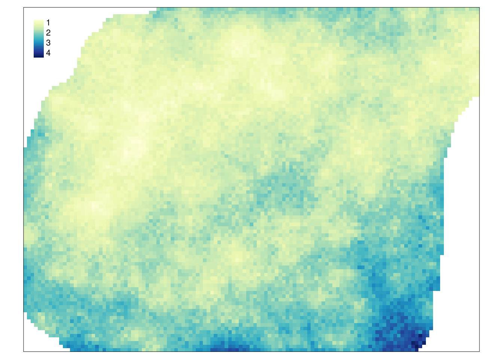
Rycina 13.11: Mapa odchylenia standardowego symulowanych wartości.
13.3.2 Sekwencyjna symulacja danych kodowanych
Symulacje geostatystyczne można również zastosować do danych binarnych.
Dla potrzeb przykładu tworzona jest nowa zmienna temp_ind przyjmująca wartość TRUE dla pomiarów o wartościach temperatury niższych niż 12 stopni Celsjusza oraz FALSE dla pomiarów o wartościach temperatury równych lub wyższych niż 12 stopni Celsjusza.
summary(punkty$temp)## Min. 1st Qu. Median Mean 3rd Qu. Max.
## 7.883 11.953 14.937 15.223 17.584 24.945
punkty$temp_ind = punkty$temp < 12
summary(punkty$temp_ind)## Mode FALSE TRUE
## logical 180 62W tej metodzie kolejne etapy przypominają przeprowadzenie krigingu danych kodowanych (rycina 13.12).
Jedynie w funkcji krige() należy dodać argument mówiący o liczbie symulacji do przeprowadzenia (nsim).
vario_ind = variogram(temp_ind ~ 1, locations = punkty)
# plot(vario_ind)
fitted_ind = fit.variogram(vario_ind,
vgm(model = "Sph", nugget = 0.3))
fitted_ind## model psill range
## 1 Nug 0.03492253 0.000
## 2 Sph 0.13081796 1733.339
plot(vario_ind, model = fitted_ind)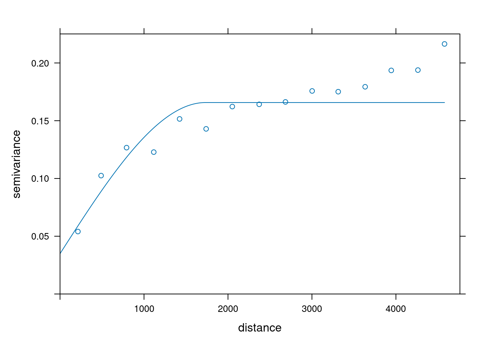
Rycina 13.12: Model semiwariogramu empirycznego binarnej zmiennej stworzony na potrzeby symulacji.
sym_ind = krige(temp_ind ~ 1,
locations = punkty,
newdata = siatka,
model = fitted_ind,
indicators = TRUE,
nsim = 4,
nmax = 30)## drawing 4 GLS realisations of beta...
## [using conditional indicator simulation]Wynik symulacji danych kodowanych znacząco różni się od wyniku krigingu danych kodowanych.
W przeciwieństwie do tej drugiej metody, w rezultacie symulacji nie otrzymujemy prawdopodobieństwa zajścia danej klasy, ale konkretne wartości 1 lub 0 (rycina 13.13).
tm_shape(sym_ind) +
tm_raster(title = "", style = "cat", palette = c("#88CCEE", "#CC6677")) +
tm_layout(main.title = "Symulacja warunkowa")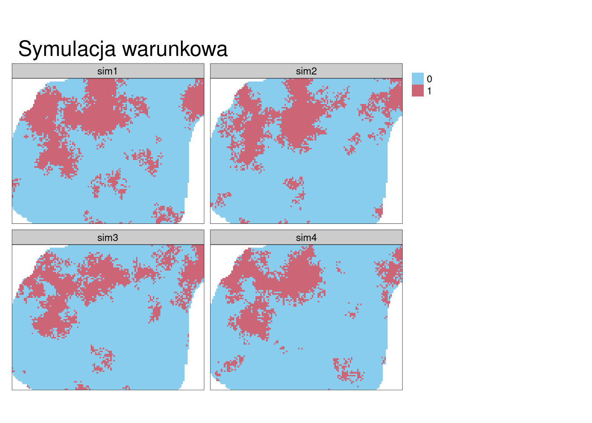
Rycina 13.13: Przykłady symulacji danych kodowanych.
13.4 Zadania
- Stwórz nową siatkę dla obszaru o zasięgu x od 0 do 40000 i zasięgu y od 0 do 30000 oraz rozdzielczości 250.
- Zbuduj po trzy symulacje bezwarunkowe w tej siatce korzystając z:
- modelu sferycznego o semiwariancji cząstkowej 15 i zasięgu 7000
- modelu nugetowego o wartości 1 razem z modelem sferycznym o semiwariancji cząstkowej 15 i zasięgu 7000
- modelu sferycznego o semiwariancji cząstkowej 5 i zasięgu 7000
- modelu sferycznego o semiwariancji cząstkowej 15 i zasięgu 1000
- Porównaj graficznie uzyskane powyżej wyniki i opisz je.
- Stwórz optymalny model semiwariogramu zmiennej
tempz obiektupunkty. Następnie korzystając z wybranej metody krigingowej, poznanej w poprzednich rozdziałach, wykonaj estymację zmiennejtemp. - Wykonaj cztery symulacje warunkowe używając optymalnego modelu semiwariancji stworzonego w poprzednim zadaniu. Porównaj uzyskaną estymację geostatystyczną z symulacjami geostatystycznymi. Jakie można zaobserwować podobieństwa a jakie różnice?
- Zbuduj optymalny model semiwariogramu empirycznego określający prawdopodobieństwo wystąpienia wartości
ndviponiżej 0.4 dla zbiorupunkty. Wykonaj estymację metodą krigingu danych kodowanych. Następnie używając tego samego modelu, wykonaj cztery symulacje warunkowe (symulacje danych kodowanych). Jakie wartości progowe prawdopodobieństwa przypominają uzyskane symulacje?